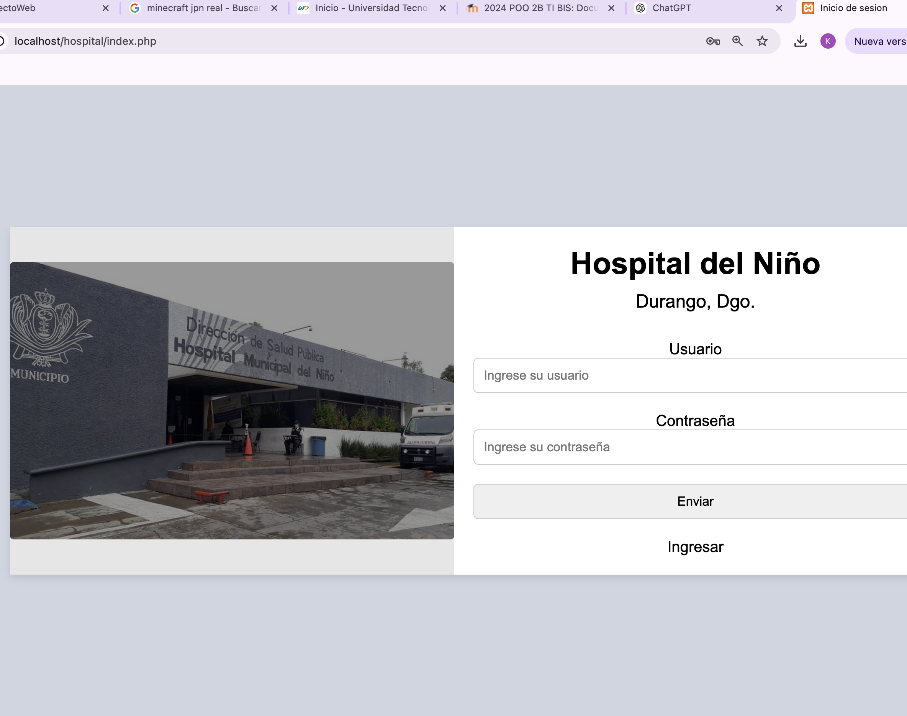

Descripcion del proyecto

Durante el cuarto cuatrimestre de la carrera de Tecnologías de la Información, periodo agosto-diciembre, se estuvo trabajando en un proyecto que integra todos nuestros conocimientos con el fin de generar y resolver una problemática. La problemática elegida para este proyecto fue la gestión de archivos que contienen información de pacientes, para poder tener un respaldo electrónico de estos, así como también mantenerlos fuera de riesgo cuando son expedientes físicos.
Regresar